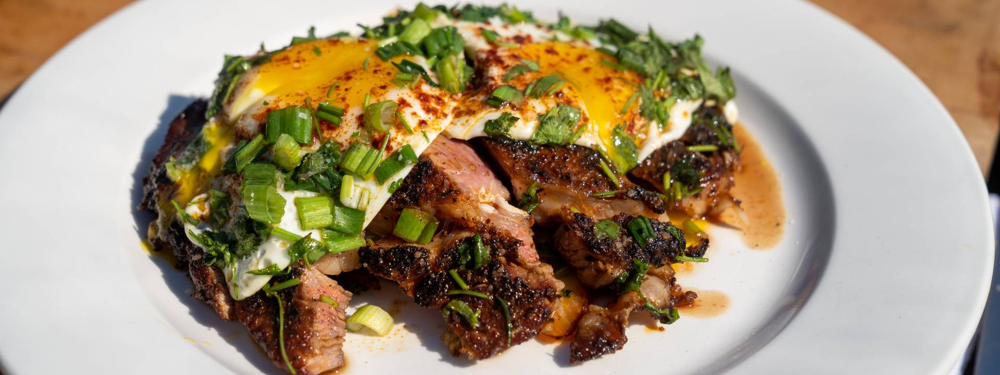

Texas Steak & Eggs From Scrambled

Entree Description
When in Texas, for breakfast, brunch, lunch or even dinner, steak and eggs are a hit. Channel your inner Texas Longhorn and try this kicked-up classic with a smoky, herby twist.
Watch Scrambled Here
Required Ingredients
- Bone-in Ribeye steak, highest quality you can find, about 1 pound
- Kosher salt
- Olive oil
- 1 white onion, cut into ¾ - 1” thick slices
- 5 cloves garlic, smashed
- unsalted butter
- 1 bunch scallions, sliced into ½” rounds, white and greeen parts separated
- 2 eggs
- 1 small bunch cilantro, chopped
- 1 lime
- Flaky salt
- Freshly cracked black pepper
Steps and Cooking Instructions
- Let the steak sit at room temperature for 10-15 minutes. Meanwhile, heat a large cast iron skillet over high heat, and let this heat up while the meat rests. Salt both sides of the steak, sprinkle with the rub and push it into the meat with your hands and try to flatten the steak a bit.
- Once the pan is smoking hot, add olive oil and swirl to coat the pan. Carefully lay the steak in the pan and let sear. Add the onions and garlic to the pan with the steak. Let the fat render from the steak, and push the onions and garlic to the sides of the pan to cook in the fat. Add about 4 tablespoons of butter to the sides of the pan with the alliums. Once the steak is nicely browned on one side, flip.
- In a separate nonstick skillet over medium heat, add about 1 tablespoon olive oil. Season the scallions with salt. Once hot, gently crack the eggs into the skillet and season with salt and a light sprinkling of the steak rub. Add another 2-3 tablespoons of butter to the pan, followed by the green parts of the scallions.
- Add the light parts of the scallions to the pan with the steak.
- Top the eggs with a half the chopped cilantro, then add the remaining cilantro to the pan with the steak. Let the eggs finish cooking to your liking.
- Once the steak has finished cooking, squeeze the lime juice all over the pan with the steak and remove from heat. Immediately transfer the steak to a sheet pan lined with a rack, then pour the onion mixture all over the steak.
- To plate, spoon about 1 cup of the onion mixture onto a plate.
- Trim the bone from the steak and reserve, and slice the remaining rib eye into 1-inch thick slices and fan the slices out over the onion mixture. Sprinkle lightly with flaky salt and freshly cracked black pepper.
- Use a large spoon to lift each fried egg onto the steak slices. Serve immediately and enjoy, Texan-style.